China Employee Termination 2026: Pulse Brief on Signal Integrity for Foreign Employers
Key takeaways
- In China terminations, the biggest execution risk is often false-green signals: dashboards look ready while critical risks remain unresolved.
- Foreign employers should manage termination readiness through signal integrity checks across legal, evidence, local-fit, payroll/tax, and communication.
- If signals are incomplete, contradictory, or stale, progression should pause.
- Signal integrity helps multinational teams reduce avoidable rework and escalation.
- Main narrative is Pulse-style impact-first; legal depth is placed in a secondary appendix.
What changed and why this matters now
Many teams now track status well but still misread readiness. Cases are marked “on track” because each function reports progress, yet cross-functional signal quality is weak: data conflicts are unresolved, payroll assumptions are provisional, or local interpretation is outdated. That creates false certainty.
This run rotates to a signal-integrity format (distinct from prior handoff/rights/pressure structures). It answers a practical question: are your readiness signals trustworthy enough to act on?
Plain-language legal context first
China employer-initiated termination generally requires lawful route selection and fact-consistent execution. For non-local readers, the practical reality is that compliance depends on decision quality, and decision quality depends on signal quality. If inputs are inconsistent or outdated, legal and payroll execution risk rises quickly.
Because local implementation can vary by city, signal freshness and locality fit are critical.
Pulse signal-integrity board
Signal 1 — Legal route signal
Healthy signal: case-specific route memo, fact mapping, local-fit note, fallback route.
Corrupted signal: route marked approved without current fact validation.
Action: downgrade readiness and require legal refresh.
Signal 2 — Evidence coherence signal
Healthy signal: reconciled chronology, source ownership, contradiction closure notes.
Corrupted signal: unresolved data conflict hidden behind overall “green” status.
Action: block downstream progression until reconciliation completes.
Signal 3 — Local-fit signal
Healthy signal: city-sensitive interpretation updated for current facts.
Corrupted signal: reliance on generic national summary with no local update.
Action: request local-fit confirmation before release decisions.
Signal 4 — Payroll/tax signal
Healthy signal: severance/IIT/social treatment finalized with payment-proof workflow.
Corrupted signal: payout assumptions still moving near communication date.
Action: enforce no-communication hold until lock is confirmed.
Signal 5 — Communication/closure signal
Healthy signal: approved scripts, designated spokesperson, retrieval-tested closure package.
Corrupted signal: messaging readiness marked complete without archive defensibility.
Action: pause close/release until communication and closure artifacts are verified.
False-green patterns foreign teams should watch
- All teams report green, but one team’s inputs are marked “provisional.”
- Local interpretation note is older than latest fact updates.
- Payroll file is approved, but tax assumption notes are missing.
- Communication script approved, but manager briefing not completed.
- Case closed operationally, but archive retrieval test not run.
Why this model helps foreign operators
Signal integrity is easy to operationalize in cross-border governance. Teams can focus less on volume of updates and more on reliability of updates. This is especially useful when global HQ is reading summaries rather than full case files.
For leadership, a signal-integrity dashboard provides clear intervention points: which signal is weak, why it is weak, who owns repair, and when it will be reliable.
Practical scenarios
Scenario A: payroll signal appears green but is stale
Payroll worksheet was approved yesterday, but route assumptions changed today.
Outcome: signal integrity failure.
Response: auto-downgrade Signal 4 and revalidate payout assumptions.
Scenario B: evidence signal conflicts with manager update
HRIS and manager records diverge after a late narrative change.
Outcome: false-green risk on Signal 2.
Response: block progression and run reconciliation sprint.
Scenario C: communication signal is green, closure signal is weak
Scripts are finalized, but archive retrieval test fails.
Outcome: post-notice defensibility risk.
Response: hold closure and fix Signal 5 before completion.
Daily operations SOP (signal-integrity workflow)
Step 1 — Assign signal owners at intake
- One owner and backup per signal.
- Define freshness threshold for each signal.
Step 2 — Validate signals before every transition
- Check completeness, consistency, and freshness.
- Mark signals healthy/corrupted with evidence links.
Step 3 — Enforce corruption holds
- Critical corrupted signals block communication.
- Log owner and remediation SLA.
Step 4 — Re-verify before release
- Require repaired signals to pass quality checks.
- Store validation timestamps.
Step 5 — Close with signal audit
- Confirm all critical signals healthy at close.
- Record false-green incidents for process improvement.
Required document checklist
- Route memo + fallback route
- Contract and amendment records
- Chronology ledger + contradiction log
- Local interpretation update note
- Severance/IIT/social worksheet
- Payment approval + proof plan
- Script package + spokesperson briefing record
- Closure memo + archive index + retrieval test
- Signal log (status, freshness, owner, timestamp)
Exception handling playbook
- Stale legal signal: legal refresh required before movement.
- Conflicted evidence signal: evidence taskforce with fixed SLA.
- Stale local-fit signal: local review priority escalation.
- Corrupted payroll signal near notice: automatic communication freeze.
- Weak closure signal: deny closure and re-run retrieval.
System implementation notes
In workflow tools, represent each signal with three states: healthy, warning, corrupted. Include freshness timer and evidence links. Add automation so communication tasks cannot close when Signals 1-4 are warning/corrupted.
Track monthly metrics: false-green count, corrupted-signal recovery time, and dispute correlation by signal type.
Common mistakes and prevention
- Mistake: status-first reporting without evidence quality checks.
Prevention: require completeness + consistency + freshness for green status.
- Mistake: stale signals treated as valid.
Prevention: freshness timers and auto-downgrade rules.
- Mistake: communication on warning payroll signal.
Prevention: hard hold on Signal 4 warnings/corruption.
- Mistake: closure without signal audit.
Prevention: mandatory end-of-case integrity check.
What to do now
- Implement five signal-integrity checks across active China termination cases.
- Add freshness timers and auto-downgrade rules.
- Enforce no-communication on corrupted critical signals.
- Publish weekly false-green incident reports.
- Use signal trends to refine staffing and controls.
What to watch next
- Rising false-green events in payroll/tax signal.
- City-specific local-fit signal staleness.
- Repeated closure signal failures after communication.
FAQ
1) Why focus on signal integrity?
Because poor signals create bad decisions even when teams are working hard.
2) What is a false-green signal?
A status marked ready while critical dependencies are unresolved or outdated.
3) Which signals should block communication?
Legal, evidence, local-fit, and payroll/tax signals when warning/corrupted.
4) How often should signal checks run?
At intake and before every major transition.
5) Who owns signal integrity?
A cross-functional governance lead with domain owners.
6) Does this add reporting overhead?
It reduces rework by preventing low-quality decisions.
7) Is this legal advice?
No. It is an operational execution framework.
Legal depth appendix (secondary)
This brief is anchored in the PRC Labor Contract Law framework and supported by practitioner/payroll references used by multinational employers. Case outcomes remain fact- and locality-sensitive, so local validation remains necessary for material decisions.
Termination payout and IIT handling should be validated against current local filing practice and advisor guidance. English-language summaries support internal alignment but should not replace localized case review.
Soft CTA
If your team needs a compliance-first model for China terminations, China-Payroll.com can help implement signal-integrity governance, payroll lock controls, and defensibility workflows for foreign employers.
Disclaimer
This content is informational only and does not constitute legal, tax, or employment advice.
Sources
- National People’s Congress of China, Labor Contract Law of the PRC (English), accessed 2026-03-06: http://www.npc.gov.cn/zgrdw/englishnpc/Law/2007-12/13/content_1384064.htm
- ICLG, Employment & Labour Laws and Regulations: China, accessed 2026-03-06: https://iclg.com/practice-areas/employment-and-labour-laws-and-regulations/china
- Littler, Key Recent Developments in China’s Employment Law, accessed 2026-03-06: https://www.littler.com/news-analysis/asap/key-recent-developments-chinas-employment-law-china-us-comparative-perspective
- PwC Tax Summaries, China Individual — Taxes on Personal Income, accessed 2026-03-06: https://taxsummaries.pwc.com/peoples-republic-of-china/individual/taxes-on-personal-income
- China Briefing, China Human Resources and Payroll Guide, accessed 2026-03-06: https://www.china-briefing.com/doing-business-guide/china/human-resources-and-payroll
Need local employment support in China?
If you need a compliance-first partner for hiring, payroll, and risk controls in China, China-Payroll.com can help evaluate the right setup.
Image Prompt Pack
Create a 16:9 hero image for article title: 'China Employee Termination 2026: Pulse Brief on Signal Integrity for Foreign Employers'. Scene: global operations team evaluating workforce model options for China market entry. Include motifs: decision matrix, org …